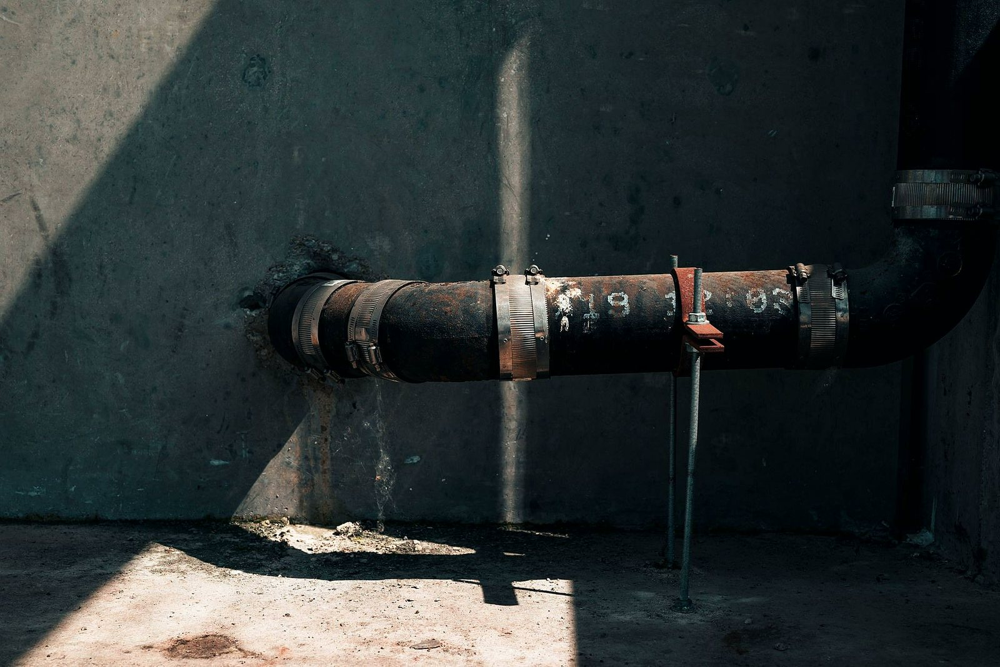
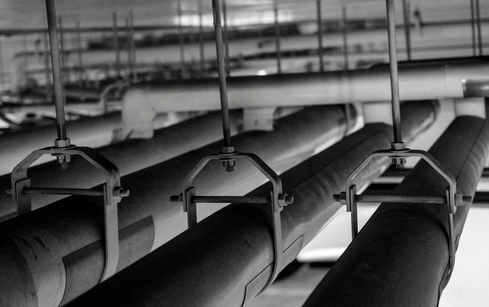
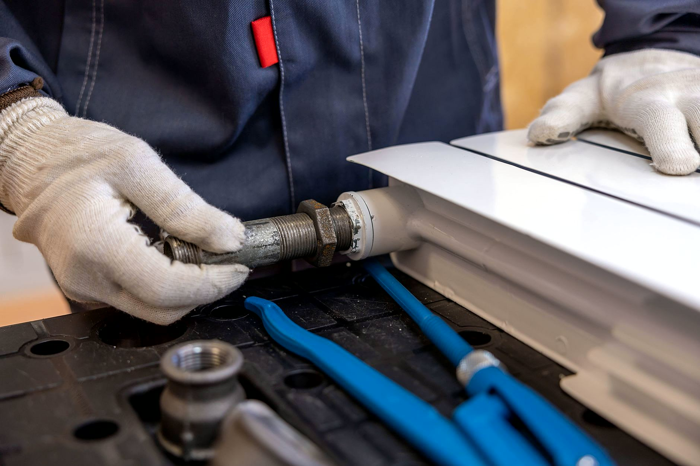
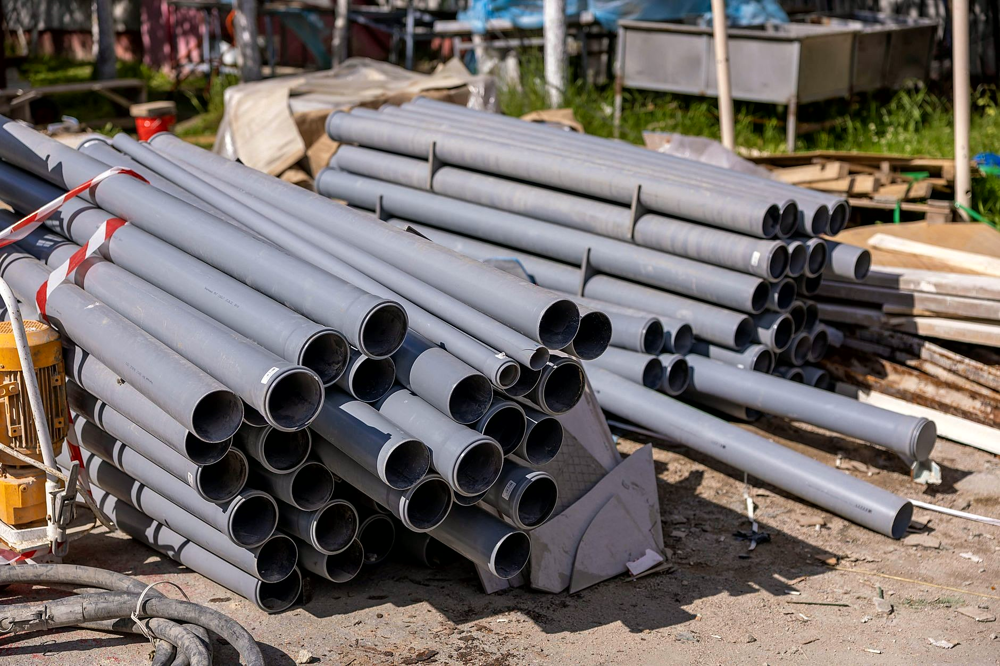
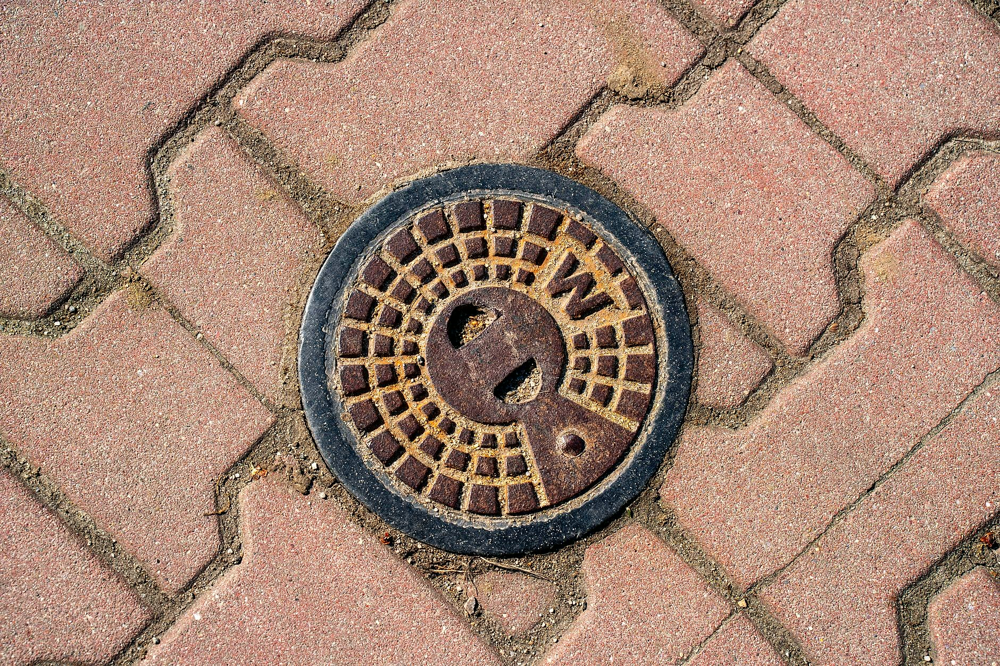

Udrażniam kanalizację w Bydgoszczy. Jadę o każdej porze.
Woda stoi w wannie, ścieki cofają się do brodzika albo wybija studzienka na podwórku? Przyjeżdżam ze sprężyną, wozem WUKO i kamerą. Cenę znasz przed robotą, nie po.
Zadzwoń, telefon odbieram całą dobę +48 535 911 346- Całą dobę, 7 dni w tygodniu
- Bezpłatna wycena
- Bydgoszcz i okolice
- Gwarancja na robociznę
Ścieki się cofają albo woda już stoi?
Odbieram telefon całą dobę, siedem dni w tygodniu. Jeszcze w trakcie rozmowy powiem, co zakręcić, żeby woda nie poszła dalej po mieszkaniu.
„Błyskawiczny przyjazd, błyskawiczną pomoc.”Elżbieta Sternal
„Polecam usługi Pana Bartosza, pomógł mi w usterce szybko i profesjonalnie, bez problemu przyjechał mimo por…”Monika Jankowska
„Polecam, Pan Bartosz to konkretny fachowiec, solidnie wykonuje swoje usługi.”Piotr Rybicki

Trzy rzeczy, które warto zrobić od razu
Tyle zwykle wystarczy, żeby z zatkanego odpływu nie zrobiło się zalane mieszkanie.
- 01
Przestań spuszczać wodę
Woda z pralki, zlewu i spłuczki musi gdzieś pójść, a w zatkanym pionie idzie najniższym odpływem. Zwykle jest nim brodzik albo kratka w łazience.
- 02
Odstaw chemię do rur
Żrący płyn rzadko rusza zbity zator, za to zostaje w rurze i pryska przy pierwszym ruchu sprężyny. Jeśli już go wlałeś, powiedz mi o tym przez telefon.
- 03
Zrób miejsce przy odpływie
Wynieś rzeczy spod zlewu albo sprzed studzienki i przygotuj stare ręczniki. Wtedy od wejścia biorę się za robotę, zamiast rozkładać Twoją szafkę.
Nie wiesz, co z tego dotyczy Twojej awarii? opisz mi to przez telefon.
Wiesz, na czym stoisz - na każdym etapie
Od pierwszego telefonu do odbioru roboty - krok po kroku.
- 01
Dzwonisz
Telefon albo zdjęcie awarii. Po minucie rozmowy wiesz, czy przyjadę i kiedy.
- 02
Znasz cenę
Drobne rzeczy wyceniam przez telefon, większe po obejrzeniu na miejscu. Cena ustalona przed robotą już nie rośnie.
- 03
Robota
Stare części pokazuję, nie wyrzucam po cichu - widzisz, co było zużyte i co wymieniłem.
- 04
Odbiór i gwarancja
Na wykonaną robotę dostajesz gwarancję i jasny rachunek - jak coś nie gra, wracam i poprawiam.
Z ostatnich wyjazdów
Sprzęt, którym pracuję na co dzień, i miejsca, w których kończy się awaria.





W czym pomagam najczęściej
Krótko, po co do mnie dzwonią. Rozwinięcie każdej pozycji jest na podstronie oferty.
- Udrażnianie kanalizacjiOdpływ, pion albo przykanalik. Sprężyna wchodzi tam, gdzie zator jest miękki i blisko.Szczegóły →
- Czyszczenie kanalizacji metodą WUKOWoda pod ciśnieniem zdejmuje tłuszcz i kamień ze ścianek. Rura wraca do swojej średnicy.Szczegóły →
- Inspekcja kanalizacji kamerąKamera pokazuje na ekranie, gdzie siedzi zator, pęknięcie albo korzeń. Bez kucia na ślepo.Szczegóły →
- Awarie wodne i kanalizacyjnePęknięta rura, cieknące przyłącze, zalana piwnica. Przyjeżdżam z częściami na typowe usterki.Szczegóły →
- Naprawa i wymiana instalacji wod-kanStare stalowe rury i podejścia robione na szybko przez poprzednika wymieniam na nowe.Szczegóły →
- Wodomierze, zawory i armaturaWodomierze, zawory odcinające, baterie, syfony. Obsługuję też firmy i wspólnoty.Szczegóły →
Co mówią klienci
Błyskawiczny przyjazd, błyskawiczną pomoc. Problem z kuchennym odpływem rozwiązany na miejscu, szybko. Rewelacja, bardzo polecam.Elżbieta Sternal
Polecam usługi Pana Bartosza, pomógł mi w usterce szybko i profesjonalnie, bez problemu przyjechał mimo pory nocnej.Monika Jankowska
Polecam, Pan Bartosz to konkretny fachowiec, solidnie wykonuje swoje usługi. Naprawił nam awarię, uratował 162 działki przed brakiem wody w długi weekend.Piotr Rybicki
Dojeżdżam do Ciebie
Najczęściej pracuję w Bydgoszczy i okolicy: Brzoza, Nowa Wieś Wielka, Solec Kujawski, Koronowo. Dalej też dojeżdżam - wystarczy zapytać przy telefonie.
- Bydgoszcz
- + okolice
Godziny pracy
Telefon odbieram także w nocy. Godziny zgodne z wizytówką Google.
Dobrze wiedzieć
Przyjedziesz w nocy albo w niedzielę?
Telefon mam włączony całą dobę, siedem dni w tygodniu. W nocy i w święta jeżdżę do awarii: cofających się ścieków, zalania, pękniętej rury. Prace planowane, jak wymiana instalacji, umawiamy na normalną porę.
Czym udrażniasz kanalizację?
Zależy, co siedzi w rurze. Sprężyna do odpływów i pionów, woda pod ciśnieniem (WUKO) do zatłuszczonych i zapiaszczonych odcinków, kamera wtedy, gdy zator wraca albo nie wiadomo, w którym miejscu jest.
Dlaczego zator wraca po miesiącu?
Bo samo przepchanie robi w osadzie przejście, a nie zdejmuje go ze ścianek rury. Jeśli rura zarasta tłuszczem, mówię o tym wprost i proponuję czyszczenie ciśnieniem zamiast drugiego przepychania.
Ile to będzie kosztowało?
Zależy, co się dzieje - dlatego wypytuję przez telefon i od razu podaję widełki. Ostateczną cenę znasz przed robotą, nie po niej.
Czy wycena jest płatna?
Nie. Przyjazd i wycena w Bydgoszczy i najbliższej okolicy są bezpłatne i do niczego nie zobowiązują.
Jak szybko przyjedziesz?
Przy zalaniu liczy się każda godzina, więc przy awarii przestawiam grafik. Prace planowane umawiamy z kilkudniowym wyprzedzeniem.
Czy dostanę fakturę?
Tak, na firmę albo na osobę prywatną. Dokument dostajesz od razu, a nie „wyślę później”.
Dojedziesz do mnie?
Granicę wyznacza kalendarz, nie mapa. Przy większej robocie dojeżdżam dalej - zapytaj.
Co, jeśli po naprawie coś dalej nie gra?
Wracam i sprawdzam. Moja wina - poprawiam za darmo; wyszło coś nowego - mówię wprost, co i za ile.
Zatkane? Jeden telefon i jadę.
Powiedz, co się dzieje i gdzie. Po minucie rozmowy wiesz, kiedy będę i ile to kosztuje.